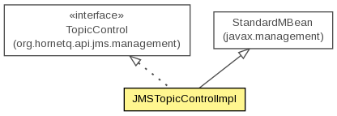

org.hornetq.jms.management.impl
Class JMSTopicControlImpl
java.lang.Object
 javax.management.StandardMBean
org.hornetq.jms.management.impl.JMSTopicControlImpl
javax.management.StandardMBean
org.hornetq.jms.management.impl.JMSTopicControlImpl
- All Implemented Interfaces:
- DynamicMBean, MBeanRegistration, DestinationControl, TopicControl
public class JMSTopicControlImpl
- extends StandardMBean
- implements TopicControl

- Author:
- Jeff Mesnil
| Methods inherited from class javax.management.StandardMBean |
cacheMBeanInfo, getAttribute, getAttributes, getCachedMBeanInfo, getClassName, getConstructors, getDescription, getDescription, getDescription, getDescription, getDescription, getDescription, getDescription, getImpact, getImplementation, getImplementationClass, getMBeanInterface, getParameterName, getParameterName, invoke, postDeregister, postRegister, preDeregister, preRegister, setAttribute, setAttributes, setImplementation |
| Methods inherited from class java.lang.Object |
clone, equals, finalize, getClass, hashCode, notify, notifyAll, toString, wait, wait, wait |
JMSTopicControlImpl
public JMSTopicControlImpl(HornetQDestination topic,
JMSServerManager jmsServerManager,
AddressControl addressControl,
org.hornetq.core.server.management.ManagementService managementService)
throws Exception
- Throws:
Exception
createFilterFromJMSSelector
public static String createFilterFromJMSSelector(String selectorStr)
throws HornetQException
- Throws:
HornetQException
addJNDI
public void addJNDI(String jndi)
throws Exception
- Specified by:
addJNDI in interface TopicControl
- Throws:
Exception
getJNDIBindings
public String[] getJNDIBindings()
- Specified by:
getJNDIBindings in interface TopicControl
getName
public String getName()
- Specified by:
getName in interface DestinationControl
isTemporary
public boolean isTemporary()
- Specified by:
isTemporary in interface DestinationControl
getAddress
public String getAddress()
- Specified by:
getAddress in interface DestinationControl
getMessageCount
public long getMessageCount()
- Specified by:
getMessageCount in interface DestinationControl
getDeliveringCount
public int getDeliveringCount()
- Specified by:
getDeliveringCount in interface DestinationControl
getMessagesAdded
public long getMessagesAdded()
- Specified by:
getMessagesAdded in interface DestinationControl
getDurableMessageCount
public int getDurableMessageCount()
- Specified by:
getDurableMessageCount in interface TopicControl
getNonDurableMessageCount
public int getNonDurableMessageCount()
- Specified by:
getNonDurableMessageCount in interface TopicControl
getSubscriptionCount
public int getSubscriptionCount()
- Specified by:
getSubscriptionCount in interface TopicControl
getDurableSubscriptionCount
public int getDurableSubscriptionCount()
- Specified by:
getDurableSubscriptionCount in interface TopicControl
getNonDurableSubscriptionCount
public int getNonDurableSubscriptionCount()
- Specified by:
getNonDurableSubscriptionCount in interface TopicControl
listAllSubscriptions
public Object[] listAllSubscriptions()
- Specified by:
listAllSubscriptions in interface TopicControl
listAllSubscriptionsAsJSON
public String listAllSubscriptionsAsJSON()
throws Exception
- Specified by:
listAllSubscriptionsAsJSON in interface TopicControl
- Throws:
Exception
listDurableSubscriptions
public Object[] listDurableSubscriptions()
- Specified by:
listDurableSubscriptions in interface TopicControl
listDurableSubscriptionsAsJSON
public String listDurableSubscriptionsAsJSON()
throws Exception
- Specified by:
listDurableSubscriptionsAsJSON in interface TopicControl
- Throws:
Exception
listNonDurableSubscriptions
public Object[] listNonDurableSubscriptions()
- Specified by:
listNonDurableSubscriptions in interface TopicControl
listNonDurableSubscriptionsAsJSON
public String listNonDurableSubscriptionsAsJSON()
throws Exception
- Specified by:
listNonDurableSubscriptionsAsJSON in interface TopicControl
- Throws:
Exception
listMessagesForSubscription
public Map<String,Object>[] listMessagesForSubscription(String queueName)
throws Exception
- Specified by:
listMessagesForSubscription in interface TopicControl
- Throws:
Exception
listMessagesForSubscriptionAsJSON
public String listMessagesForSubscriptionAsJSON(String queueName)
throws Exception
- Specified by:
listMessagesForSubscriptionAsJSON in interface TopicControl
- Throws:
Exception
countMessagesForSubscription
public int countMessagesForSubscription(String clientID,
String subscriptionName,
String filterStr)
throws Exception
- Specified by:
countMessagesForSubscription in interface TopicControl
- Throws:
Exception
removeMessages
public int removeMessages(String filterStr)
throws Exception
- Specified by:
removeMessages in interface DestinationControl
- Throws:
Exception
dropDurableSubscription
public void dropDurableSubscription(String clientID,
String subscriptionName)
throws Exception
- Specified by:
dropDurableSubscription in interface TopicControl
- Throws:
Exception
dropAllSubscriptions
public void dropAllSubscriptions()
throws Exception
- Specified by:
dropAllSubscriptions in interface TopicControl
- Throws:
Exception
getMBeanInfo
public MBeanInfo getMBeanInfo()
- Specified by:
getMBeanInfo in interface DynamicMBean- Overrides:
getMBeanInfo in class StandardMBean
Copyright © 2013 JBoss, a division of Red Hat. All Rights Reserved.